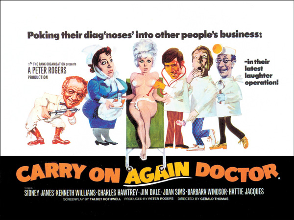

Peter Rogers
Faith Kent (uncredited)
At the Long Hampton Hospital, Dr. Jimmy Nookey (Jim Dale) seems to attract trouble, beginning with an incident in the women's washroom which he'd mistakenly entered, frightening the highly strung Miss Armitage out of her senses. Nookey's carefree manner isn't to everyone's liking at the hospital, with Dr. Stoppidge (Charles Hawtrey) wanting Nookey sacked for the washroom incident. Accident-prone Nookey then quickly falls in love with a film star patient named Goldie Locks (Barbara Windsor).
With the hospital Matron (Hattie Jacques) and his moody boss Dr. Frederick Carver (Kenneth Williams) watching his every move, Dr. Nookey drinks a fruit punch spiked by jealous Dr. Stoppidge (Charles Hawtrey) at the staff party. The drunk Nookey ends up crashing through a window on a hospital trolley, after he had almost got into bed with a patient. Goldie leaves Nookey, as the latter is not interested in marriage.
Meanwhile, Carver and his rich patient Ellen Moore (Joan Sims) dispatch the disgraced Nookey to Moore's medical mission in the Beatific Islands, where it rains for nine months of the year. Nookey discovers Gladstone Screwer (Sid James), the local medicine man, who has a weight-loss serum. Nookey soon returns to England and opens a new surgery with Mrs. Moore, much to the anger of Carver. While Matron joins Dr. Nookey's clinic, Carver and Stoppidge plot to try to steal the serum. Stoppidge dresses as a female patient to effect the theft, but his luck runs out when Nookey catches him in the act.
Goldie returns to have the serum as well, much to Nookey's chagrin. Gladstone quickly discovers that Nookey is making a fortune from his serum, and cuts off his supply to deliver the serum in person and get in on the action. Nookey prevaricates, so Gladstone gives him a serum which in fact seems to cause sex changes. The movie ends with Nookey and Goldie getting married and the rest of the staff of the Long Hampton Hospital becoming friends again.
Filming dates: 17 March - 2 May 1969.
Interiors: Pinewood Studios, Buckinghamshire.
Exteriors: (1) Maidenhead, where the town hall doubled for the hospital as it previously did in Carry On Doctor, (2) Pinewood Studios. Heatherden Hall, the studio management block was used as the exterior for the Moore-Nookey Clinic, (3) Windsor, Berkshire. Location of Dr Nookey's consulting rooms (the same location featured in Carry On Regardless as the Helping Hands Agency and in Carry On Loving as the Wedded Bliss agency).
Wilfred Brambell's character was a non-speaking cameo in an early scene. When he appeared, the theme from Steptoe and Son was played over his scene.
Derek Winnert.com - "You hardly go to a Carry On film for plot, but a few more good gags and situations would really help. However, there are some great one-liners and cross-dressing delights, and the cast by and large make up for the script deficiencies. You can complain about the slightly lame and sometimes tired script, but not ever about the lovely actors. Sample humour: Hawtrey (as Dr Stoppidge): ‘I do not object to jiggery, but I do take exception to pokery’."